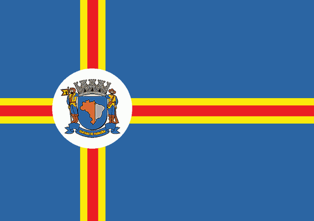

Santana de Parnaíba
Berço de heróis consagrados
Cidade dos Bandeirantes
Deste solo muito amado
Com orgulho festejamos
O dia dos Bandeirantes!
SALVE! ANHANGUERA, BORBA GATO,
FERNÃO e SUZANA DIAS
BRAVOS HERÓIS DO PASSADO.
Daqui partiram as bandeiras
Por rincões ignorados
Levando no peito a cruz
Nos lábios o nome amado
De Santana de Parnaíba
Essa terra alvissareira.
Viva! Esses homens destemidos
Vivam todos que engrandeçam
Nossa terra brasileira!